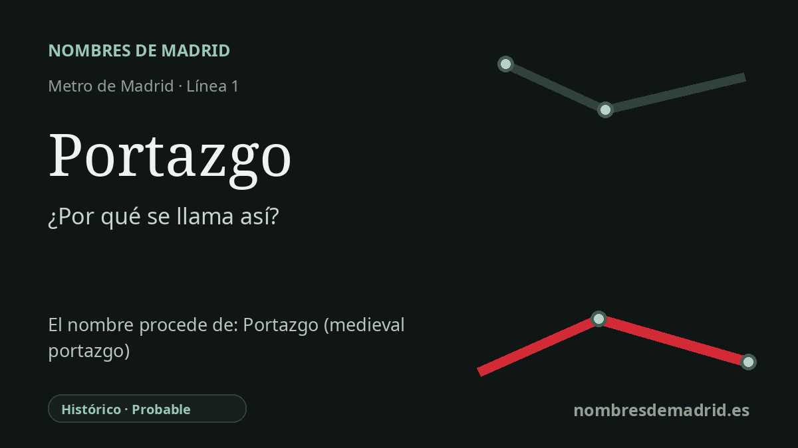

Publicado el · Investigación de Nombres de Madrid · Cómo verificamos cada origen · 7 fuentes consultadas
Respuesta rápida
Portazgo toma su nombre del antiguo Portazgo de Vallecas, un punto de cobro en la carretera de Madrid hacia Valencia. El topónimo sobrevivió a la desaparición del peaje y pasó a la estación de la línea 1 inaugurada en 1962.
La historia del nombre
La estación de Portazgo toma su nombre de un topónimo ya asentado en Vallecas antes de la llegada del Metro. En español, un **portazgo** era el derecho que se pagaba por pasar por un punto determinado de un camino; la palabra también podía designar el edificio o lugar donde se cobraba.
La referencia local es el **Portazgo de Vallecas**, ligado a la carretera de Madrid hacia Valencia. La investigación histórica local sitúa su primera noticia conocida en 1793, cuando una resolución real estableció un portazgo en la Fuente de Ygares para atender la conservación del camino de Madrid a Vallecas. Durante el siglo XIX, la prensa menciona repetidamente tierras, arriendos, estado del camino y subastas oficiales en torno al Portazgo de Vallecas.
Por eso conviene no presentar el nombre de la estación como una mera pervivencia medieval. Los portazgos existieron en la España medieval y moderna, pero el caso vallecano está mejor documentado como un punto fiscal viario de finales del siglo XVIII y del siglo XIX en la carretera de Valencia. En 1850, por ejemplo, los anuncios ya describen el portazgo como situado en la carretera de Madrid a Valencia, y otras referencias lo ubican entre Madrid, el entorno del Puente de Vallecas y el antiguo pueblo de Vallecas.
El nombre sobrevivió a la institución. A finales del siglo XIX, las fuentes apuntan a que el control fiscal se desplazó hacia un fielato en la zona del Puente de Vallecas/Pacífico, mientras el antiguo Portazgo seguía siendo un lugar reconocible de la carretera. Después, la palabra pasó a la geografía urbana del Vallecas moderno, incluido el actual barrio administrativo y la estación de Metro.
La estación se inauguró con la prolongación de la línea 1 hasta Portazgo en julio de 1962 y durante décadas fue el extremo sureste de la línea antes de las ampliaciones posteriores. Su nombre funciona así como un eco de transporte: una parada moderna de metro llamada por un antiguo punto de parada donde carros, mercancías y viajeros se encontraban con el límite fiscal de los caminos de Madrid.